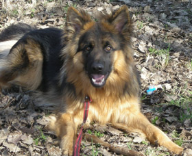

Waar dient uw hond in ieder geval aan te voldoen?

- Uw hond dient sociaal te zijn naar dier en mens
- Eenvoudige commando's te kennen
- Alle geldige inentingen te hebben zoals de cocktail alsmede
Parvo en kennelhoest
- Recent ontvlooid en ontwormd te zijn
- Loopse teven kunnen niet met de groep mee,
raadpleeg ons over een eventuele tijdelijke oplossing
- W.A.(mede)-verzekerd te zijn.
- Kijk dit s.v.p. na in uw polis
In verband met de veiligheid van de groep kunnen bepaalde typen honden niet mee.